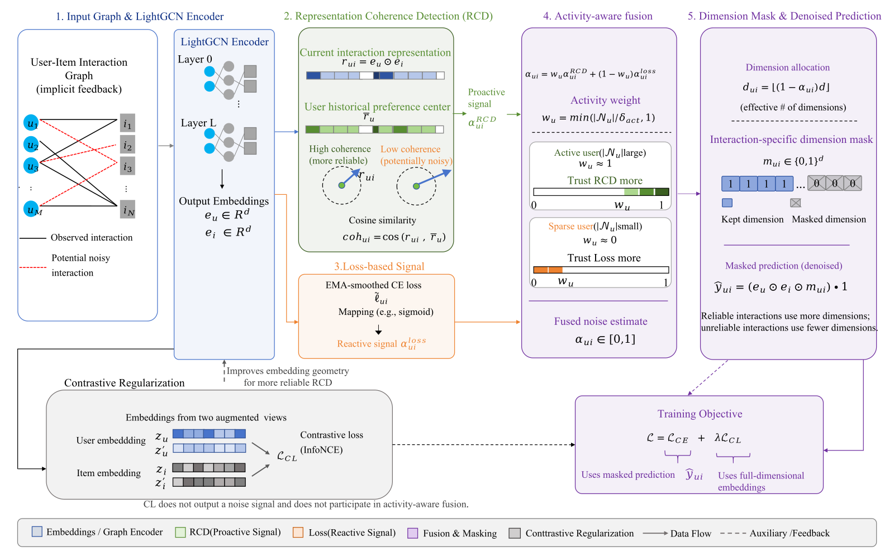
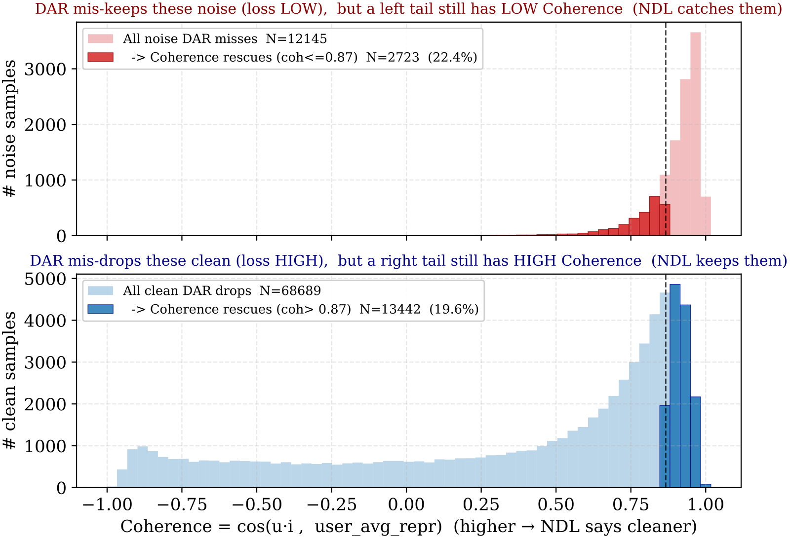
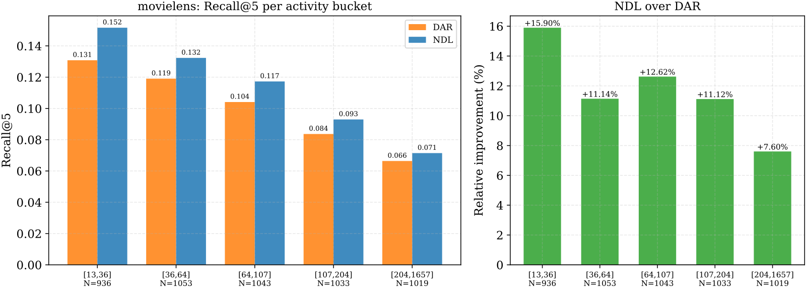

Contents · 10 sections
1The steps a click goes through in training2Flagging a click before the model gets it wrong3Is the coherence score just repeating what the loss already knows?4Mixing the two signals by the length of user history5A suspicious interaction only loses some dimensions6Adding contrastive learning as well7NDL's Recall@5 is 5.63% to 17.95% higher than DAR's8What each part of NDL contributes9Sparse users' fusion weight leans toward loss, so why do they gain the most?10When it misjudges, and what deployment costsSHARE
To decide whether a click was a misclick, this NetEase denoising paper checks not only how well the model predicts the click but also whether the click fits the usual taste of the user who made it.
Graph collaborative filtering models such as LightGCN learn embeddings from the click relations between users and items. Each click is an edge in the graph. The training objective asks for a higher dot product between the embeddings of a user and an item the user clicked, so every edge pulls the two embeddings toward each other. But clicks include misclicks and impulse actions. Illustration: a user has watched 60 sci-fi movies and one day accidentally opens a cooking video. Once this edge enters training, the user's embedding is pulled a little toward cooking content, and later recommendations may drift with it.
The difficulty is that the training data does not mark which clicks are misclicks. The 60 sci-fi views and the 1 accidental cooking click are all logged as the same kind of "clicked" positive sample, and the model has to estimate on its own which one is unreliable.
Existing explicit denoising methods (methods that find suspicious interactions during training and reduce their influence) almost all judge whether an interaction is noise from that interaction's training loss; they differ only in what they do with the loss. T-CE (truncated loss) drops interactions whose loss exceeds a threshold from the gradient update entirely. R-CE (reweighted loss) gives smaller gradient weights to interactions with larger loss. DAR (Dimension-adaptive, a SIGIR 2025 denoising method and the strongest baseline in this paper) converts each interaction's loss into how many embedding dimensions the interaction may use: the larger the loss, the fewer dimensions.
Back to our user, relying on loss alone goes wrong in two places. The cooking video's loss becomes large only after the model predicts it badly, which means the model must first err on this sample before finding it suspicious. If by late training the model has memorized this misclick, its loss becomes small and it passes as a clean sample. Conversely, a niche sci-fi movie the user genuinely likes, which the model has not learned yet and gives a low predicted score, also has a high loss and gets mistaken for noise. The authors also point out that the same interaction has different loss values early and late in training and under different negative samples, so loss alone is not a reliable noise indicator.
NDL (Noise-aware Dimension Learning, the name the authors give to this denoising training method) asks one more question: in embedding space, does this interaction point in the same direction as this user's usual interactions? Concretely, it represents this interaction and the user's usual interactions each as a vector and compares the angle between them; we work through the numbers below. This question does not need the interaction's prediction error. On three public datasets, NDL's Recall@5 is 5.63% to 17.95% higher than that of the loss-only DAR. All these computations happen only during training, and serving still uses only the trained embeddings, so nothing changes on the serving side.
The steps a click goes through in training
Put that cooking click into NDL's training pipeline and it goes through the steps below in order. The cooking numbers in the table are illustrative values computed later in the text, and only the output of step 1 is carried online.
| Step | Input | Operation | Output | Training only? |
|---|---|---|---|---|
| 1. LightGCN encoding | The user-item click graph | Two layers of graph propagation | A 32-dimensional embedding for each user and item | No, serving uses it |
| 2. Compare this click with the user's usual behavior (RCD branch) | This click's interaction vector, the user's historical mean (see next section) | Cosine, then sigmoid | Coherence score 0 (completely different direction), noise score 0.73 | Yes |
| 3. Loss branch | This click's smoothed loss | Sigmoid | A second noise score based on the size of the loss | Yes |
| 4. Activity-aware fusion | The two noise scores, the user's interaction count | Weighted average | Final noise score 0.73 | Yes |
| 5. Dimension limit | Final noise score | Convert to a usable dimension count | The cooking click uses only the first 8 of 32 dimensions for its predicted score | Yes |
| 6. Contrastive learning | Embeddings in the batch | Two dropouts, InfoNCE | One extra term in the loss, no noise score | Yes |

The division of labor in this pipeline is: the earlier branches judge how suspicious the interaction is, and the later dimension limit decides how much influence a suspicious interaction can have. The dimension limit already exists in DAR; NDL mainly changes what decides the dimension count, from loss alone to loss plus the coherence score.
Flagging a click before the model gets it wrong
NDL first turns "this interaction" into a vector. The authors multiply the user embedding and the item embedding element-wise to get . The predicted score is the dot product of the two embeddings, so each dimension of is exactly that dimension's contribution to the predicted score, and summing all dimensions gives the predicted score.
Next, NDL averages over all of the user's interactions to get the historical mean , which summarizes which dimensions the user's scores usually come from. This mean is recomputed with the current embeddings at the start of each epoch.
The cosine between and is the interaction's coherence score (the paper calls it coherence). The branch that computes this score and turns it into a noise score is called RCD (Representation Coherence Detection). RCD compares which dimensions this score relies on with which dimensions this user's scores usually rely on. Cosine looks only at direction, and scaling a vector by two leaves the cosine unchanged, so how high the predicted score is does not enter this comparison. Hoot says

The 3 dimensions, 3 interactions and all vector values are illustrative, kept positive for easy hand calculation; for the real coherence distribution see Figure 1 in the article.
Source
paper §1.2 Eqs. (1)(2), §3.1 Eqs. (3)–(5); the toy vectors are illustrative, not from the paperIllustration: shrink 32 dimensions to 3. The user's historical mean is , meaning the user's scores usually come from the first two dimensions. A sci-fi movie has , twice the size of the mean but in exactly the same direction, so its coherence score is 1. The cooking video has , perpendicular to the mean, so its coherence score is 0. The example shows that as long as the embeddings already place cooking and sci-fi in different directions, the cooking click can be flagged without waiting for its loss to grow. Real embedding dimensions have no tidy meanings such as "sci-fi" or "cooking"; this is only so we can compute.
This is what the authors mean by "active": computing the coherence score needs no prediction error for this interaction. The embeddings themselves are still trained, though, so how accurate the coherence score is depends on how well the embeddings are trained.
Next, the coherence score is converted into a noise score between 0 and 1:
is the sigmoid, is the coherence score, and is the dividing line. When the coherence score exactly equals , the noise score is 0.5, meaning the interaction counts as neither suspicious nor reliable; the lower the coherence score, the higher the noise score.
Illustration: take as 0.1, the paper's value on MovieLens. The sci-fi movie has coherence 1, , and . The cooking video has coherence 0, , and .
On Yelp and Amazon-book, is 0.5. The authors' reasoning is that historical means are noisier on sparse data and call for a flatter curve. The larger is, the less the noise score changes for the same difference in coherence. On MovieLens, performance is stable when is at most 0.5, and at 1.0 NDCG drops by about 4.4%, because the noise scores of different interactions bunch together and become nearly constant. This shows the dividing line need not be tuned finely, but if it is set too large, the coherence score can no longer tell interactions apart.
Is the coherence score just repeating what the loss already knows?
On MovieLens, the authors take the DAR model with the best validation performance and pick out two groups of samples it misjudges based on loss. One group is 12,145 truly noisy samples that DAR kept; the other is 68,689 clean samples that DAR treated as noise and suppressed. The authors then split the coherence scores into a high half and a low half at the median coherence over all samples (about 0.87). The 0.87 cut is used only for this figure's analysis and has nothing to do with in training.
The result: among the noise DAR kept, 22.4% have coherence at most 0.87, meaning these noisy samples have low coherence even though their loss is not high. Among the clean samples DAR suppressed, 19.6% have coherence above 0.87, meaning these clean samples have high coherence even though their loss is high.

My reading is that the two proportions, 22.4% and 19.6%, should be compared with 50%. If the coherence score were completely unrelated to the loss's errors, a median split would put roughly half of each group on the side opposite to the loss's judgment. Only about one fifth actually lands there, which shows that in these two groups most samples have coherence on the same side as the loss's judgment. The authors call the two signals "orthogonally complementary"; from these numbers I can only see partial complementarity. Back to the cooking example: at this rate, roughly one in five noisy samples that DAR lets through has coherence below the median. Since 0.87 is only an analysis cut, these proportions show that the two signals differ, not how many samples NDL actually corrects during training.
Mixing the two signals by the length of user history
The coherence score depends on the historical mean, and for users with little history the mean itself is unstable. A new user who has watched only 10 movies may switch genre on the 11th, which may just be an emerging interest rather than a misclick. So the authors fuse the two noise scores according to user activity:
is the user's interaction count. is computed by dividing the interaction's EMA-smoothed CE (cross-entropy) loss by a scaling constant (5 on MovieLens) and applying a sigmoid; when the loss is close to 0, it equals . is the activity threshold, which the authors set near each dataset's median user interaction count: 50 on MovieLens, 30 on Yelp, and 25 on Amazon-book.
The threshold cannot be set arbitrarily. Tuning on MovieLens shows that if it is too small, users with little history and unstable means also rely mainly on RCD, which causes misjudgments; if it is too large, moderately active users are forced to rely mainly on loss, diluting RCD's benefit.
Illustration: for a user who has watched 60 movies, , so the noise score follows RCD entirely and the cooking click's final noise score is 0.73. For a new user who has watched 10 movies, . Suppose this new user clicks a mystery movie whose interaction vector is perpendicular to the historical mean, so its coherence is 0 and RCD gives 0.73; the model predicts this sample reasonably well, the loss is near 0, and the loss branch gives 0.5. The fused score is . This shows that with little history, RCD's 0.73 carries only 20% of the weight and the final noise score is lower than with RCD alone, so a genuine new interest is penalized less than it would be under RCD alone.
A suspicious interaction only loses some dimensions
The cost of T-CE dropping the whole interaction is direct: if what gets dropped is actually that niche sci-fi movie, the information is gone entirely. R-CE only scales the gradient down, so every one of the 32 dimensions is still updated by this interaction. DAR's approach is to let suspicious interactions use only the leading part of the dimensions, and NDL adopts it:
is the total embedding dimension, is the number of dimensions this interaction may use, and is the -th dimension of the user embedding. Working through the three interactions above, the sci-fi movie, the cooking video and the mystery movie, gives the following (, illustration).
| Interaction | Coherence score | Activity weight | Final noise score | Usable dimensions |
|---|---|---|---|---|
| A sci-fi movie from the 60-sci-fi user | 1 | 1 | About 0 | Close to 32 |
| The same user's accidental cooking click | 0 | 1 | 0.73 | 8 |
| The 10-movie new user's mystery movie | 0 | 0.2 | 0.55 | 14 |
For the cooking video, ; for the mystery movie, . The sum runs only to dimension 8, so the cooking click's predicted score is determined by the first 8 dimensions alone. The remaining 24 dimensions neither enter this sample's predicted score nor get updated by gradients from this sample's loss. What is limited here is this click's role as a training sample. If the niche sci-fi movie were misjudged with the same noise score, it would still have 8 dimensions to keep training, whereas under T-CE it would use none.
Adding contrastive learning as well
The coherence score relies on cosine, and for cosine to discriminate, the embeddings must be spread out in the space; otherwise every interaction's cosine is close to 1. Illustration: if all items crowd near one direction, the sci-fi movie's coherence might be 0.95 and the cooking video's 0.90, almost impossible to tell apart.
So the authors add contrastive learning, which only adds one small term to the training loss. The user and item embeddings in each batch each go through two independent dropouts; the two versions of the same user or item are pulled together, other users or items in the batch are pushed away, and the loss is InfoNCE. This term produces no noise score and does not enter the fusion; it is only added to the total loss with weight .
This term can only be added lightly. On MovieLens, Recall@5 peaks at 0.1126 when ; raising to 0.01 drops it to 0.1045, lower even than the 0.1071 without contrastive learning at all. This shows contrastive learning plays only a supporting role here, and a larger weight hurts.
NDL's Recall@5 is 5.63% to 17.95% higher than DAR's
The noise in the experiments is defined by rule: in three public datasets, ratings below 3 stars count as noise and appear only in the training set, while the validation and test sets of the main experiments keep only interactions of 3 stars and above. All methods use the same LightGCN, with 32-dimensional embeddings and two layers of graph propagation. The table below shows Recall@5, with improvement relative to DAR; interaction density is the number of actual interactions as a share of "users × items".
| Dataset | Interaction density | LightGCN | DAR | NDL | Improvement |
|---|---|---|---|---|---|
| Amazon-book | 0.0342% | 0.0187 | 0.0273 | 0.0322 | +17.95% |
| Yelp | 0.0640% | 0.0229 | 0.0292 | 0.0328 | +12.33% |
| MovieLens-1M | 2.9586% | 0.1017 | 0.1066 | 0.1126 | +5.63% |
All methods share the same embedding dimension and backbone, which shows NDL's gain over DAR does not come from larger model capacity. The sparser the data, the larger the relative gain. Recall@5 on Amazon-book and Yelp is itself only around 0.03, so the 17.95% is, in absolute terms, a move from 0.0273 to 0.0322.
Overall Recall alone cannot tell which kind of items gained, so the authors ran a separate diagnostic. In it, test positives are split by rating into a high-rated group (3 stars and above) and a low-rated group (below 3 stars), and the low-rated group's Recall@K is subtracted from the high-rated group's. The larger this gap, the more the model favors putting high-rated items into the top K. On MovieLens, NDL's gap exceeds DAR's by 0.0118 at K=10 and by 0.0137 at K=20. This shows that NDL's recall gap between high-rated and low-rated items is larger than DAR's, that is, NDL's ranking leans more toward high-rated items.
What each part of NDL contributes
On MovieLens, the authors remove one part of NDL at a time, keeping the rest unchanged, and see how much Recall@5 drops.
| Removed part | Recall@5 | Relative to full NDL |
|---|---|---|
| None (full NDL) | 0.1126 | – |
| RCD branch | 0.1003 | -10.9% |
| Contrastive learning | 0.1071 | -4.9% |
| Loss branch | 0.1084 | -3.7% |
| Activity-aware fusion | 0.1103 | -2.0% |
Removing RCD causes the largest drop, and 0.1003 is even lower than LightGCN without any denoising (0.1017). This shows that in this configuration the coherence score is the part contributing most to Recall@5. The version without RCD also decides dimensions from loss alone, yet scores below DAR's 0.1066. So this row only shows how much is lost by removing the coherence score from NDL; it cannot be read as the ceiling of loss-only methods.
Without contrastive learning, NDL beats DAR by only 0.0005, so on MovieLens the 0.0060 lead of full NDL over DAR (0.1126 minus 0.1066) takes the coherence score and contrastive learning together.
The authors attribute the gap over DAR to the coherence signal, on the grounds that the backbone and dimension are the same. But NDL also has contrastive learning, which DAR lacks, so the claim this table supports is narrower: the coherence score contributes most, and the contrastive learning term cannot be dropped either. Removing the loss branch costs 3.7%, which shows loss is still useful once the coherence score is present.
Sparse users' fusion weight leans toward loss, so why do they gain the most?
The authors split MovieLens users into five equal bins by training interaction count, about 1,000 users per bin. These bins are only for the figure and are unrelated to . In the figure, NDL's Recall@5 improvement over DAR generally decreases from +15.90% in the sparsest bin to +7.60% in the most active bin. All five bins show larger gains than the overall +5.63% for MovieLens in the main results table, and the two sets of numbers do not share the same aggregation, so we only read the trend here: the sparser the users, the larger the gain.

The sparsest bin's fusion weight leans most toward loss, yet it gains the most, which shows that leaning toward loss does not hurt sparse users. The authors' explanation is that each interaction of a sparse user carries more weight, so a single noisy interaction can push the user embedding off course, while active users have enough clean history to average the noise out. The figure compares full NDL with DAR, so its trend supports saying sparse users benefit most, but not how much of that gain comes from the coherence score.
When it misjudges, and what deployment costs
The coherence score assumes a user's short-term preferences are stable, that is, recently clicked items point the same way as previously clicked ones. Illustration: if the user who watched 60 sci-fi movies really starts learning to cook, this click's coherence is still 0 and the activity weight is still 1. The loss branch's weight in the fusion formula is 0, so this genuine new interest also gets only 8 dimensions.
Users whose interests are spread out to begin with also blunt the coherence score. Illustration: half of a user's interactions have and half have , giving a historical mean of . Both sci-fi and cooking then have coherence of about 0.71, lower than the 1 for a single-interest user. Both are genuine interests, so deviating from the mean no longer means a misclick. The authors leave multi-interest users to future work.
The engineering cost sits on the training side. Serving uses only the trained embeddings, with the same shape and storage as the original LightGCN, adding no online latency, parameters or memory. Training adds a table of user historical means and a smoothed loss per interaction; in the authors' offline experiments, end-to-end training time grew by about 4.2% over LightGCN. The authors' target scenario is the NetEase News feed, with about 20 million users and 8 million items, and the model has not been deployed online yet.
So the evidence in this paper is offline results on public datasets, with noise defined by low ratings, and there are no online numbers yet for real misclicks. NDL changes only the training stage: loss only answers whether the model can currently fit an interaction, and NDL additionally asks whether the interaction looks like this user's usual behavior. That one question, plus a lightly weighted contrastive learning term, gives 5.63% to 17.95% higher Recall@5 than the loss-only DAR on the same LightGCN.
How did this read for you?
Hoot made a note. Thanks for the feedback.
One tap, no sign-in; tap again to undo. Only anonymous counts are kept, never who you are.
Discussion
Add experiment details, reproduction notes or a different take. Requires a GitHub sign-in.
Loading the discussion…